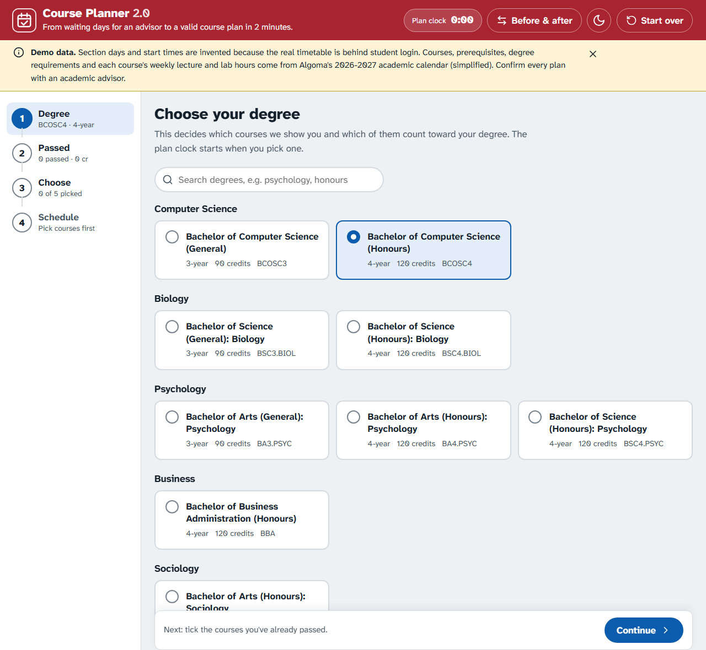
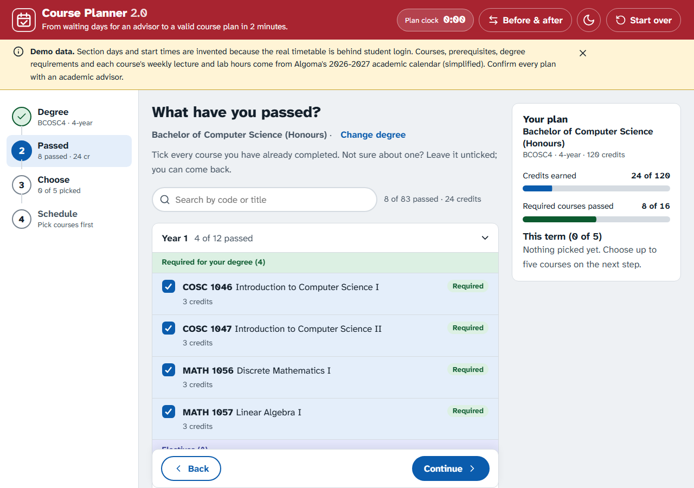
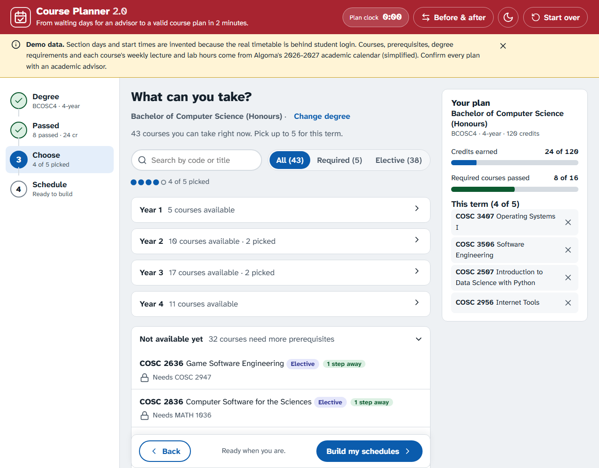
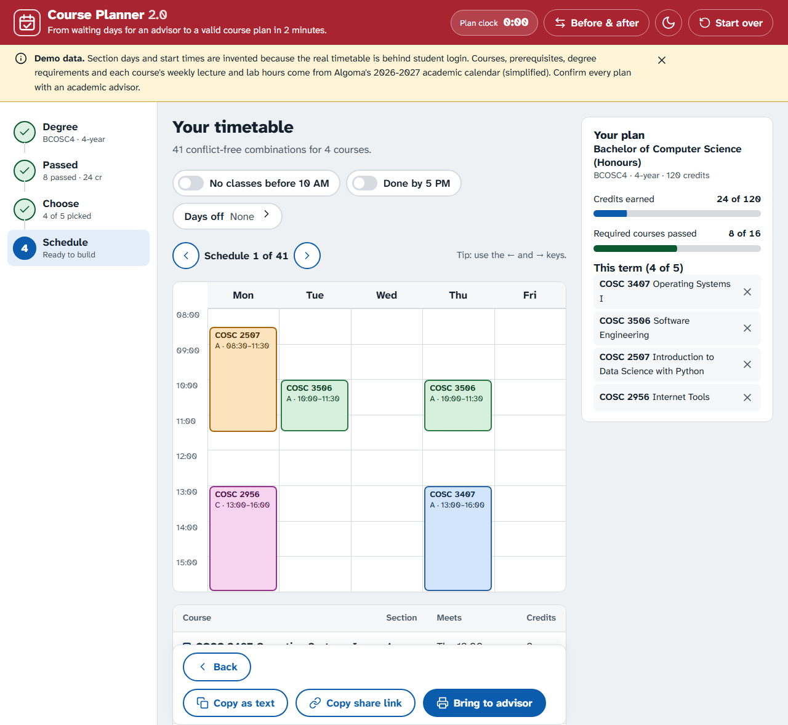
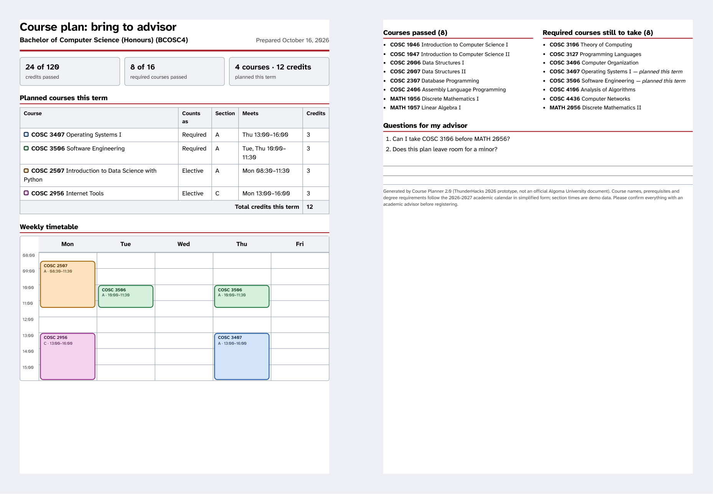

Course Planner 2.0
From waiting days for an advisor to a valid course plan in minutes.
ThunderHacks 2026 · Main Track · Version 2.0
aryano96.github.io/LayerLabs
01 · Name the Version 1.0
Today: plan by hand, then email an advisor
Every Algoma student does this, every term.
02 · Show what is broken
Four specific problems
The reply time on Algoma’s own course-registration support page.
Prerequisites, degree rules and section times each live somewhere different.
Five courses with three sections each, checked for clashes by eye.
“Completion of second year core program in Computer Science or permission of the Department.” COSC 3506 Software Engineering, academic calendar
03 · Build the Version 2.0
Four steps from degree to timetable




9 degrees · 307 courses · real prerequisites from the 2026–2027 academic calendar
Live demo
One student, one term
- Pick Computer Science (Honours)
- Tick the 8 courses already passed
- See Required courses first
- COSC 3106 is “1 step away”: it needs MATH 2056
- Pick 4 courses: 41 clash-free timetables
- Filter early mornings, late days, Fridays
04 · Prove it is better
Before and after
| Today (Version 1.0) | Course Planner 2.0 | |
|---|---|---|
| Time | 2–3 business days for a reply | Minutes, measured by an on-screen plan clock |
| Steps | 8 manual steps | 4 steps |
| Errors | Mistakes found by the advisor, days later | No ineligible picks, no clashes: both covered by automated tests |
| Access | Calendar PDFs and a login portal | Any device, keyboard only, screen-reader table, light and dark |
The 8 steps are the team’s walkthrough of today’s process.
The advisor’s side
A confirmed plan, not a blank page
- Progress in credits and required courses
- The planned courses and weekly timetable
- What is still required
- The student’s own questions
The advisor confirms a plan instead of building one.

Real data · accessible · ready to switch
Built to be used after the weekend
Courses, prerequisites, credits and degree rules come from the 2026–2027 calendar. Only section days and start times are invented, and every screen says so.
Keyboard only, visible focus, a high-legibility typeface, strong contrast, and a text table beside the timetable for screen readers.
46 automated rule tests and over 100 browser checks. No server, no accounts, nothing leaves the browser.
Students open a link. The registrar updates two data files each term. Another school swaps those files and it works unchanged.
A wait of days, reduced to minutes.
Try it, and read the code.
Live app aryano96.github.io/LayerLabs
Code github.com/aryano96/LayerLabs
Thank you · Questions welcome